Saturday, December 07, 2002
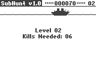
The
full B2C source code for SubHunt by Tom R.
Download subhuntsrc.zip
Friday, December 06, 2002
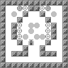
The last in
a series of seven levels for Cybikoban by Sargus Lockhart.
Send your files to
gengar56@hotmail.com.
Download OS-07.zip
Thursday, December 05, 2002
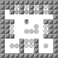
The sixth
in a series of seven levels for Cybikoban by Sargus Lockhart.
Download OS-06.zip
Wednesday, December 04, 2002
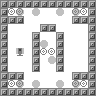
The fifth
in a series of seven levels for Cybikoban by Sargus Lockhart.
Download OS-05.zip
Tuesday, December 03, 2002
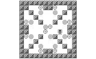
The fourth
in a series of seven levels for Cybikoban by Sargus Lockhart.
Download OS-04.zip
Monday, December 02, 2002
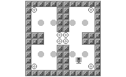
The third in
a series of seven levels for Cybikoban by Sargus Lockhart (Cybikoban
included).
Download
OS-03.zip
Sunday, November 24, 2002
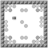
The second
in a series of seven levels for Cybikoban by Sargus Lockhart. Cybikoban
included.
Download
OS-02.zip
Saturday, November 23, 2002
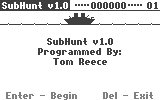
A
recreation of the classic TI SubHunt game.
Download subhunt.zip
Wednesday, November 13, 2002
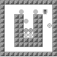
The first
of a series of seven levels for Cybikoban by Sargus Lockhart. Cybikoban
included.
Download
OS-01.zip
Monday, November 04, 2002
5 KB B2C
app! This is the Trace animation based on the scene from the movie The Matrix.
Same as the version previously released but is now several KB smaller.
Download trace.zip
Friday, November 01, 2002
A new
file from Mages Adventure II. This music file is part of the soundtrack, and is
the main Forest theme. Can you figure out what game this is
from?
-Jace
Download frstmaz2.music
Wednesday, October 30, 2002
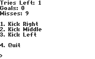
The
bestest soccer game ever created for Cybiko. Press some buttons, and hope you
get lucky. Features advanced 3D graphics, and the most complex AI ever seen in a
Cybiko game.
- Tom R.
Download shootout.zip
Tuesday, October 29, 2002
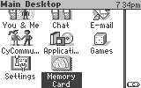
This
is the desktop.app for Cybiko Classic that will make your desktop like the one
on Xtreme. It's a smaller download than the full one and is faster to install.
In addition, there is no need to backup your files before using this because it
will only replace desktop.app. See included readme.
Download
xtremeclassic.zip
Saturday, October 26, 2002
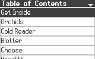
Sing
along with your favorite Stone Sour songs using this Run Reader book. *Note:
this book is not edited for content.* Submitted by Bonfire.
Download stonesour.zip
Friday, October 25, 2002
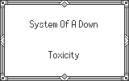
Sing along
with your favorite System of a Down songs using this Run Reader book. *Note:
this book is not edited for content.* Submitted by Bonfire.
Download soad.zip
Thursday, October 24, 2002
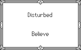
Sing
along with your favorite Disturbed songs using this Run Reader book. *Note: this
book is not edited for content.*
Download disturbed.zip
Tuesday, October 22, 2002
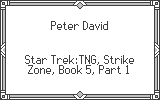
Star Trek: The
Next Generation: Strike Zone, Part 1 of 5 (book for Run Reader).
Submitted by Eagle.
Download
ST1.book
Monday, October 21, 2002
Check out the lyrics written by Greg here (you can download
and listen to this song on your computer from there too). This is that Camelot
tune converted to Cybiko's .music format so you can listen to it anywhere.
Download camelot.music
Sunday, October 20, 2002
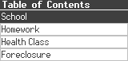
A Run
Reader book called My Thoughts Part I by Tyler Bryant (Iceman925).
Download mythoughts1.book
Saturday, October 19, 2002
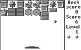
OmegaSoft: Gaming Essenstials (OS: GE) level
pack 1 for Men's Room by Sargus Lockhart. To upload the pack of 16 levels, you
will need the Men's
Room Construction Kit (1.28 MB).
Download OSlevels1.lev
Friday, October 18, 2002
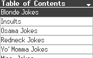
A Run Reader
book of jokes sent in by Tom R. *Warning!* Some jokes are explicit and may not
be appropriate for everyone.
Download jokes.zip
Thursday, October 17, 2002
An
updated version of the game "Crossbow". Thanks to Ryan Ozmun for this
file.
Download
crossbow.zip
Wednesday, October 16, 2002
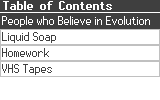
A Run Reader book called "Things
that Make me Angry" by Josh Read. Did you know liquid soap could make someone
angry?? Run Reader included.
Download
thingsthatmakemeangry.zip
Tuesday, October 15, 2002
A new version
of the game Velocity has you tapping the [Enter] key fast as you can. In the
future I will probably add a graphical bar to make things more
interesting.
Download
rapidvelocity.zip
Monday, October 14, 2002
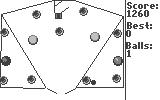
A pinball table
by Eagle. Pinball game app included.
Download rt.zip
Sunday, October 13, 2002
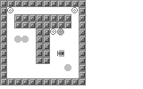
Five
levels for Cybikoban (included) by Tom Reece.
Download level_pack.zip
Saturday, October 12, 2002
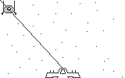
Space is a
target shooting game where you have to aim your ship's gun to destroy the other
ship. Read the included readme.
Download Space.zip
Friday, October 11, 2002
Screensavers by ERansom: includes four
screensavers.
Download
screensavers.app
Thursday, October 10, 2002
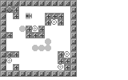
A level for
Cybikoban (included). Created and submitted by Eagle.
Download ban1.zip
Wednesday, October 09, 2002
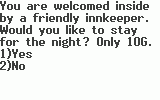
Mages
Adventure Remake by Jace: Mages Adventure now works on the Xtreme as well as the
Classic. There is one other major change, but Jace will announce how that works
later.
Download
Mages_I.zip